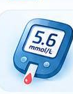
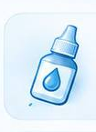
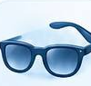

Диабеттік ретинопатия
Торлы қабықтағы қан тамырларын тексеретін офтальмологқа қаралу қажет.
Көру кенет нашарлағанда дәрігерге жеткенге дейінгі алғашқы әрекеттер



Көру қабілеті кенеттен нашарласа немесе жоғалса
Көз қатты ауырса
Көз қызарса немесе ісінсе
Көз алдында жарқылдар, жаңа қара дақтар не «шыбындар» пайда болса
Көру бұлыңғырланса немесе көру аймағында бос жер байқалса
Мұндай белгілерде өз бетіңізше ем қолданбай, дереу офтальмологқа немесе жедел жәрдемге жүгініңіз.
Торлы қабықтағы қан тамырларын тексеретін офтальмологқа қаралу қажет.

Көз бұршағының бұлыңғырлануын анықтап, қажет болған жағдайда операция жасайтын офтальмолог-хирургқа қаралу қажет.

Көз ішілік қысымды өлшеп, көру жүйкесінің жағдайын бақылайтын офтальмологқа қаралу қажет.

Көздің орталық көру аймағы — макуланы тексеретін офтальмологқа қаралу қажет.

Көздің шыны тәрізді денесіндегі қан құйылуды емдейтін витреоретиналды хирургқа қаралу қажет.

Торлы қабықты қалпына келтіру бойынша операция жасайтын витреоретиналды хирургқа қаралу қажет.
Бұл ақпарат білім беру мақсатында берілген және дәрігердің тексеруі мен жеке медициналық кеңесін алмастырмайды. Диагнозды және емді дәрігер анықтайды.